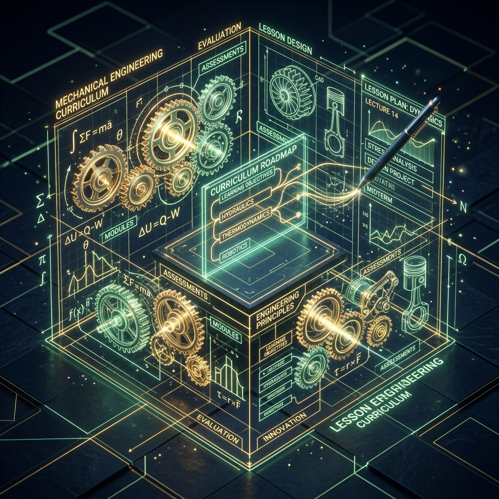
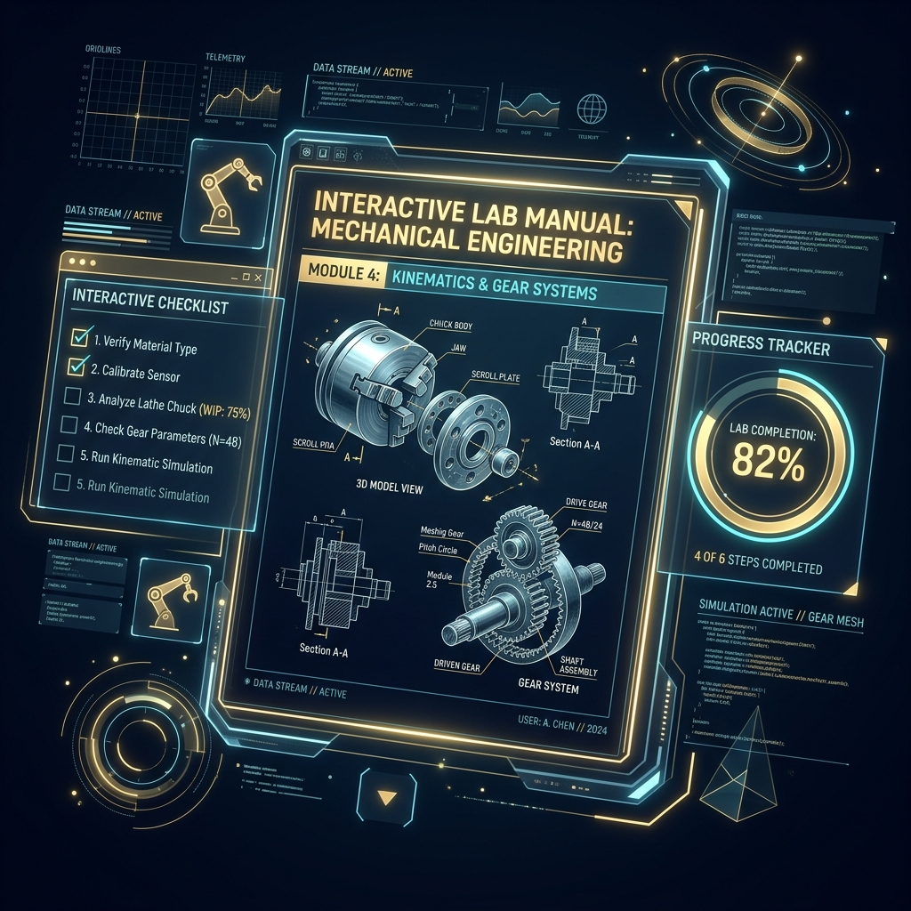
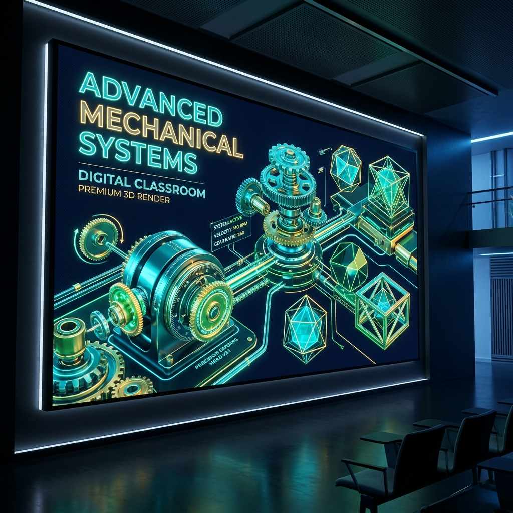
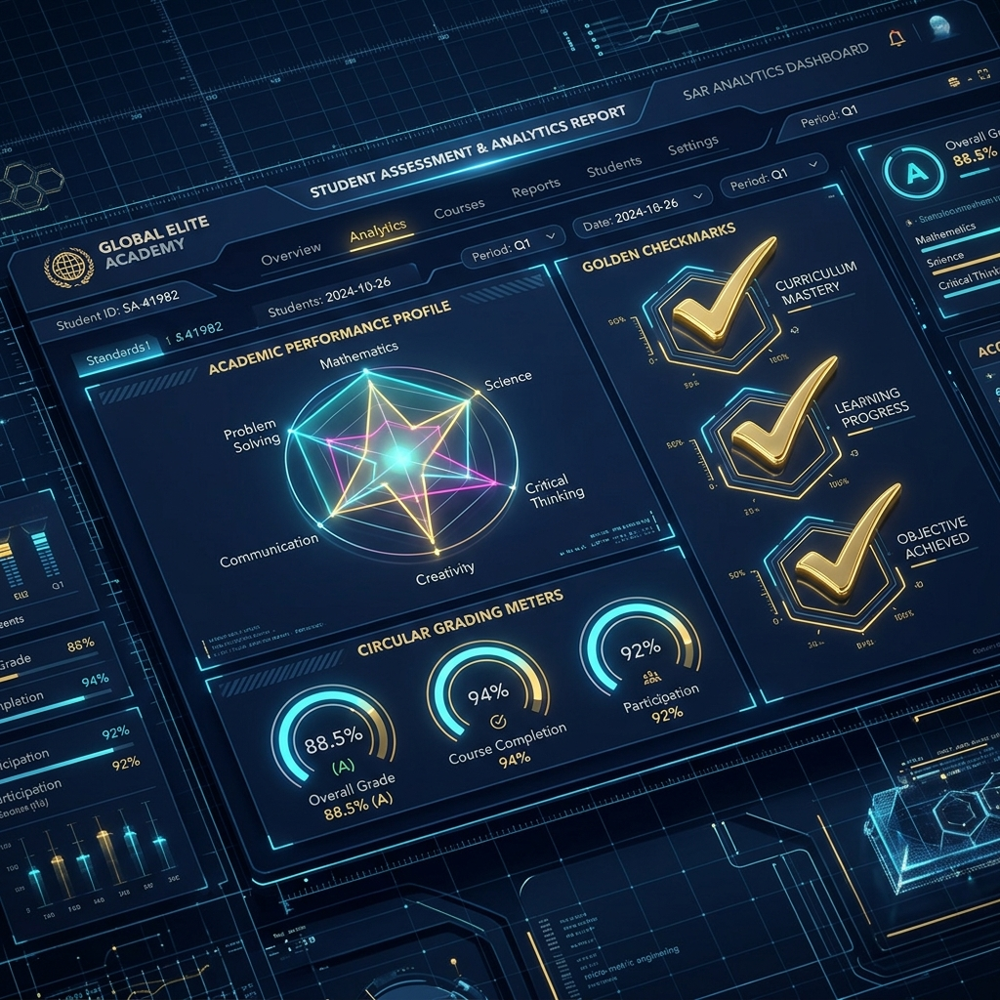

PPG PRAJABATAN 2025-2026
Eka Sri Darma
NIM 20250843912
Calon pendidik vokasional bidang Teknik Pemesinan yang berdedikasi untuk menciptakan pembelajaran inovatif, berpusat pada peserta didik, dan relevan dengan standar industri manufaktur.

"Teknik mengajarkan saya presisi; pendidikan mengajarkan saya empati keduanya saya bawa ke setiap kelas yang saya masuki."
Asal & Keunikan Daerah
Perkenalkan, saya Eka Sri Darma, mahasiswa Program Pendidikan Profesi Guru (PPG) di Universitas Sarjanawiyata Tamansiswa (UST) Yogyakarta. Saya lahir dan tumbuh di Manisrenggo, Kabupaten Klaten, sebuah daerah istimewa di lereng Gunung Merapi yang diberkahi tanah yang subur serta warisan sejarah yang agung. Daerah asal saya adalah rumah bagi candi-candi yang megah, sebuah simbol harmoni, toleransi, dan mahakarya peradaban masa lalu. Dari tanah penuh sejarah inilah, tumbuh inspirasi besar dalam diri saya untuk menjadi seorang pendidik yang adaptif dan menghargai keberagaman.
Melalui program PPG, saya mengembangkan kompetensi pedagogik, profesional, kepribadian, dan sosial sebagai fondasi menjadi guru yang berintegritas dan berdampak. Saya percaya bahwa pendidikan adalah investasi terbaik bagi masa depan bangsa. Tumbuh dari nilai-nilai Tamansiswa yang menjunjung tinggi kebebasan, kebudayaan, dan kemanusiaan, saya berkomitmen untuk menjadi guru yang tidak hanya mentransfer ilmu, namun juga menginspirasi dan memberdayakan setiap siswa. Saya berkomitmen untuk merancang pembelajaran yang bermakna, mengintegrasikan teknologi tanpa kehilangan akar kearifan lokal, serta menciptakan ruang kelas yang aman dan inklusif bagi setiap keunikan peserta didik.
Inspirasi & Visi Menjadi Guru
Menyalakan Lentera, Mengukir Masa Depan
Perjalanan saya untuk memilih jalan pengabdian sebagai seorang pendidik bukanlah sebuah kebetulan, melainkan sebuah panggilan jiwa (calling) yang tumbuh dari refleksi mendalam terhadap realitas di sekitar saya.
Inspirasi terbesar saya lahir ketika menyadari bahwa tantangan terbesar generasi muda saat ini bukan lagi sekadar akses terhadap informasi, melainkan bagaimana mengolah informasi tersebut menjadi ilmu yang bermanfaat dan karakter yang bijaksana. Di era digital yang bergerak begitu cepat, anak-anak membutuhkan lebih dari sekadar "mesin pencari" atau buku teks berjalan; mereka membutuhkan seorang teladan, mentor, dan fasilitator yang mampu menuntun mereka menemukan potensi terbaiknya. Saya ingin menjadi bagian dari sistem pendukung yang menyelamatkan masa depan mereka.
Visi saya sebagai seorang guru profesional adalah "Mewujudkan ekosistem belajar yang berpihak pada murid, yang tidak hanya menuntut pencapaian akademik, tetapi juga menuntun tumbuh kembangnya budi pekerti luhur sesuai dengan kodrat alam dan kodrat zaman mereka."
Secara konkret, tujuan yang ingin saya capai dalam karier keguruan saya ke depan adalah:
1. Menjadi Guru Penjelajah yang Inovatif: Terus memperbarui strategi pembelajaran yang interaktif dan berbasis teknologi, tanpa menanggalkan nilai kearifan budaya lokal.
2. Membangun Ruang Kelas yang Inklusif: Memastikan tidak ada satu pun anak yang merasa tertinggal atau diabaikan karena setiap anak memiliki keunikan cara belajar (differentiated learning).
3. Menjadi Pembelajar Sepanjang Hayat: Konsisten melakukan refleksi diri atas praktik mengajar yang saya lakukan demi meningkatkan mutu pendidikan secara berkelanjutan.
Bagi saya, setiap ruang kelas adalah laboratorium peradaban. Di sanalah, dengan segenap kompetensi profesional yang telah saya asah, saya siap mendedikasikan hidup untuk menuntun anak-anak bangsa menjemput masa depan mereka dengan penuh percaya diri.
Motivasi
"Mengajar bukan tentang memaksa setiap anak melangkah di jalan yang sama, melainkan tentang menuntun kodrat unik mereka agar mampu bersinar di jalannya masing-masing dengan budi pekerti yang luhur."
Makna di Balik Prinsip
Terinspirasi dari filosofi pendidikan Ki Hadjar Dewantara, saya meyakini bahwa anak bukanlah kertas kosong yang bisa digambar sesuka hati oleh orang dewasa, melainkan sehelai kertas yang sudah memiliki pola samar sejak lahir.
Tugas saya sebagai seorang pendidik bukanlah mengubah atau memaksakan kehendak agar semua anak seragam, melainkan menuntun (pamong) dan mempertebal pola-pola baik yang ada di dalam diri mereka. Setiap peserta didik memiliki potensi, gaya belajar, dan kecerdasan unik yang berbeda-beda (differentiated potential). Dengan memberikan ruang yang merdeka namun tetap terarah, serta konsisten menanamkan budi pekerti dan nilai-nilai karakter, saya berkomitmen untuk mengantarkan mereka menjadi versi terbaik dari diri mereka sendiri demi menyongsong masa depan.
Riwayat Hidup
Universitas Sarjanawiyata Tamansiswa
PPG Prajabatan
Mengikuti Program Pendidikan Profesi Guru (PPG) Prajabatan di Universitas Sarjanawiyata Tamansiswa Yogyakarta sebagai upaya memperoleh sertifikat pendidik profesional. Selama program, mengembangkan empat kompetensi utama guru yaitu pedagogik, profesional, kepribadian, dan sosial melalui perkuliahan intensif, seminar pendidikan, microteaching, serta Praktik Pengalaman Lapangan (PPL) di sekolah mitra yaitu SMK Negeri 2 Depok Sleman. Mendalami implementasi Kurikulum Merdeka, penyusunan modul ajar, Alur Tujuan Pembelajaran (ATP), serta asesmen berbasis kompetensi yang berpusat pada peserta didik.
Engineering Research Club
Organisasi
Aktif sebagai anggota Engineering Research Club (EneRC), sebuah Badan Semi Otonom Fakultas Teknik Universitas Negeri Semarang yang bergerak di bidang keilmiahan, penelitian, dan penalaran. Organisasi kemahasiswaan ini fokus pada pengembangan ilmu pengetahuan dan teknologi, khususnya melalui riset, inovasi berbasis teknologi hijau, dan kompetisi karya tulis ilmiah.
Universitas Negeri Semarang
S1 Pendidikan Teknik Mesin
Menyelesaikan studi Sarjana Pendidikan Teknik Mesin di Universitas Negeri Semarang (UNNES) dengan fokus pada penguasaan ilmu keteknikan mesin sekaligus metodologi pengajaran vokasional. Mempelajari bidang manufaktur, pemesinan, gambar teknik, dan teknologi, serta mengintegrasikannya ke dalam praktik pembelajaran di SMK. Memperoleh bekal kuat dalam merancang pembelajaran kejuruan yang kontekstual, berbasis kompetensi, dan relevan dengan kebutuhan industri.
SMK Negeri 2 Klaten
Program Keahlian Teknik Pemesinan
Menempuh pendidikan menengah kejuruan di SMK Negeri 2 Klaten pada Program Keahlian Teknik Pemesinan, salah satu SMK terbaik di Jawa Tengah yang dikenal sebagai pusat keunggulan teknik. Selama tiga tahun, membangun fondasi kuat di bidang pengoperasian mesin bubut, mesin frais, mesin gerinda, dan gambar teknik manufaktur. Pengalaman di SMK inilah yang menumbuhkan kecintaan pada dunia teknik sekaligus menjadi titik awal perjalanan menjadi calon pendidik vokasional yang kompeten.
Artefak

RPP Siklus 1 - Penggunaan Dividing Head
Rencana Pelaksanaan Pembelajaran (RPP) Siklus 1 tentang teknik mengefrais segi enam menggunakan kepala pembagi (dividing head) dan penerapan prinsip K3 di bengkel.
Materi Siklus 1 - Penggunaan Dividing Head
Bahan ajar komprehensif untuk kelas XI SMK yang mencakup teori dasar mesin frais, jenis-jenis pisau frais, serta metode pengefraisan rata dan segi banyak.

LKM Siklus 1 - Penggunaan Dividing Head
Lembar Kerja Murid (LKM) berupa panduan langkah kerja dan lembar pengukuran mandiri untuk praktik pembuatan benda kerja berbentuk segi enam beraturan.

Media Presentasi Siklus 1 - Penggunaan Dividing Head
Slide presentasi interaktif mengenai mekanisme kerja kepala pembagi (dividing head) dan perhitungan pembagian langsung maupun tidak langsung pada mesin frais.

Instrumen Asesmen Siklus 1 - Penggunaan Dividing Head
Instrumen penilaian pembelajaran Siklus 1 yang memuat rubrik evaluasi kognitif, lembar penilaian unjuk kerja psikomotorik, dan penilaian sikap disiplin K3.
Video Apersepsi K3 Bubut
Video singkat penunjang untuk memotivasi siswa tentang pentingnya penggunaan alat pelindung diri (APD) dan keselamatan kerja (K3) saat mengoperasikan mesin.
RPP Siklus 2 - Parameter Pemotongan
RPP Siklus 2 dengan pendekatan Understanding by Design (UbD) dan Deep Learning, berfokus pada materi parameter pemotongan bubut dan frais.
Materi Siklus 2 - Parameter Pemotongan
Modul materi ajar yang membahas secara mendalam rumus kecepatan potong (Cs), putaran mesin (RPM), kecepatan pemakanan (F), dan waktu pemesinan bubut/frais.
LKM Siklus 2 - Pre-Test Diagnostik Pertemuan 1
Lembar tes diagnostik awal untuk mengukur pemahaman prasyarat siswa mengenai parameter pemotongan mesin bubut sebelum pembelajaran dimulai.
LKM Siklus 2 - Parameter Pemotongan Bubut (Pertemuan 1)
Lembar Kerja Murid pertemuan pertama yang membimbing siswa menghitung dan menganalisis parameter pemotongan pada proses pembubutan.
LKM Siklus 2 - Job Sheet Bubut Stud Bolt
Panduan job sheet praktikum pembuatan baut tanam (stud bolt) lengkap dengan spesifikasi gambar kerja, langkah operasional, dan parameter bubut.
LKM Siklus 2 - Parameter Pemotongan Frais (Pertemuan 2)
Lembar Kerja Murid pertemuan kedua untuk latihan perhitungan dan analisis parameter pemotongan pada proses pengefraisan.
LKM Siklus 2 - Job Sheet Frais Mur T
Panduan job sheet praktikum pembuatan mur T (T-nut) pada mesin frais lengkap dengan gambar proyeksi, langkah pengefraisan, dan parameter potong.
LKM Siklus 2 - Post-Test Sumatif Pertemuan 2
Lembar evaluasi sumatif di akhir pertemuan kedua untuk mengukur capaian pemahaman siswa terkait parameter pemotongan bubut dan frais.
LKM Siklus 2 - Lembar Work Preparation
Lembar kerja persiapan siswa untuk merencanakan urutan proses pengerjaan, pemilihan alat potong, dan kalkulasi parameter potong bubut & frais.
Media Presentasi Siklus 2 - Parameter Pemotongan
Slide presentasi pendukung pembelajaran yang mengilustrasikan formula teknis, visualisasi titik potong pahat, dan tabel parameter bubut/frais.
Asesmen Siklus 2 - Ceklis Observasi K3 Praktik
Lembar ceklis observasi keselamatan kerja untuk menilai kepatuhan siswa dalam menerapkan standar keselamatan (K3) selama praktikum.
Asesmen Siklus 2 - Rubrik Unjuk Kerja Parameter Pemotongan
Rubrik penilaian unjuk kerja untuk mengevaluasi aspek keterampilan siswa dalam menghitung, mengatur, dan menerapkan parameter pemotongan.
Jurnal Refleksi Siklus 2
Catatan reflektif guru mengenai kendala penyesuaian sumbu mesin frais dan efektivitas pembagian waktu praktik pada siklus kedua.
RPP Siklus 3 - Membubut Eksentrik
RPP Siklus 3 yang merinci strategi pengajaran praktikum pembubutan poros eksentrik menggunakan chuck rahang empat tidak sepusat.
Materi Siklus 3 - Membubut Eksentrik
Modul ajar kelas XI SMK yang menjelaskan konsep pergeseran pusat (offsetting), metode pencekaman, dan perhitungan langkah pembubutan eksentrik.
LKM Siklus 3 - Lembar Work Preparation Membubut Eksentrik
Lembar persiapan kerja mandiri siswa yang memuat rencana langkah pembubutan eksentrik, penentuan titik pusat baru, dan spesifikasi alat.
Media Pembelajaran Siklus 3 - Job Sheet Poros Eksentrik
Lembar job sheet teknis yang menyajikan detail gambar kerja 2D poros eksentrik, tingkat toleransi suaian, dan urutan pengerjaan bubut.
Asesmen Siklus 3 - Ceklis Observasi Guru
Instrumen penilaian untuk mengamati performa guru, efektivitas metode mengajar, serta pengelolaan kelas selama pembelajaran pembubutan eksentrik.
Asesmen Siklus 3 - Rubrik Unjuk Kerja Bubut Poros Eksentrik
Rubrik penilaian unjuk kerja psikomotorik siswa dalam melakukan setting pergeseran eksentrik, ketelitian ukuran, dan kualitas permukaan poros.
Video Praktik Mengajar Bubut Eksentrik
Rekaman video dokumentasi pelaksanaan pembelajaran praktik pemesinan bubut eksentrik terbimbing di bengkel sekolah mitra.
Analisis Produk Pembelajaran
Refleksi terhadap proses penyusunan, dasar pedagogis, faktor penerapan, dan penyesuaian produk pembelajaran untuk kebutuhan kelas yang berbeda.
Produk rencana dan perangkat pembelajaran pada Siklus 1, 2, dan 3 dirancang terintegrasi antara teori, praktik, dan kebutuhan industri vokasional (SMK).
Galeri
Dokumentasi Kegiatan Praktik Mengajar PPG


Video Praktik
Praktik Pembelajaran PPG
Penilaian
Dokumen Lampiran
Lampiran 7
Instrumen Penilaian Penyusunan Perangkat Pembelajaran.
Lampiran 8
Instrumen Penilaian Pelaksanaan Pembelajaran.
Guru Masa Depan
Menuju Pendidik Profesional
Halaman ini merupakan peta jalan (roadmap) dan komitmen nyata saya dalam mendedikasikan diri di dunia pendidikan. Sebagai guru lulusan PPG, saya memandang masa depan bukan sekadar tentang menjalankan tugas mengajar, melainkan tentang bagaimana memberikan dampak berkelanjutan di sekolah tempat saya mengabdi kelak.
🚀 Misi Keguruan
Langkah nyata yang akan saya lakukan di sekolah tempat mengabdi kelak:
-
1. Pembelajaran Berpusat pada Murid (Student-Centered Learning)
Saya akan aktif merancang dan menerapkan modul ajar yang kreatif, interaktif, serta berbasis pembelajaran berdiferensiasi (differentiated learning) untuk mengakomodasi keberagaman gaya belajar dan potensi unik setiap siswa.
-
2. Mengintegrasikan Teknologi secara Bijak
Memanfaatkan platform digital dan inovasi teknologi terkini sebagai media pembelajaran abad ke-21, guna menciptakan pengalaman belajar yang menyenangkan sekaligus relevan dengan kodrat zaman anak.
-
3. Membangun Ekosistem Kelas yang Aman dan Inklusif
Menciptakan ruang kelas yang menjunjung tinggi toleransi, bebas dari perundungan (bullying), dan menghargai setiap pendapat, sehingga siswa merasa aman secara psikologis untuk mengeksplorasi potensi terbaiknya.
-
4. Mengembangkan Kolaborasi Berkelanjutan
Membuka ruang komunikasi dan sinergi yang positif dengan rekan sejawat, kepala sekolah, orang tua murid, serta komunitas praktisi demi kemajuan mutu sekolah tempat saya mengabdi.
🎯 Kompetensi & Karakter
Menjadi guru masa depan menuntut keseimbangan antara aspek keilmuan dan kematangan kepribadian. Berikut adalah strategi konkret saya dalam merawat dan meningkatkan kompetensi diri secara berkelanjutan:
Pedagogik
Rutin mengevaluasi hasil pembelajaran di setiap akhir siklus, serta aktif mengikuti pelatihan perangkat ajar berbasis kurikulum terbaru agar strategi mengajar selalu relevan dengan kebutuhan murid.
Profesional
Memperdalam penguasaan materi esensial secara teoretis maupun praktis melalui literatur ilmiah, jurnal pendidikan, serta aktif dalam forum Musyawarah Guru Mata Pelajaran (MGMP) atau KKG.
Sosial
Mengasah kepekaan sosial dan keterampilan berkomunikasi dua arah dengan seluruh warga sekolah, serta terlibat aktif dalam kegiatan sosial kemasyarakatan di lingkungan sekitar sekolah.
Kepribadian
Menampilkan pribadi yang religius, berakhlak mulia, berwibawa, jujur, dan disiplin tinggi. Berkomitmen menjadikan diri saya "role model" nyata (ing ngarsa sung tuladha) oleh peserta didik.


.jpg)
.jpg)